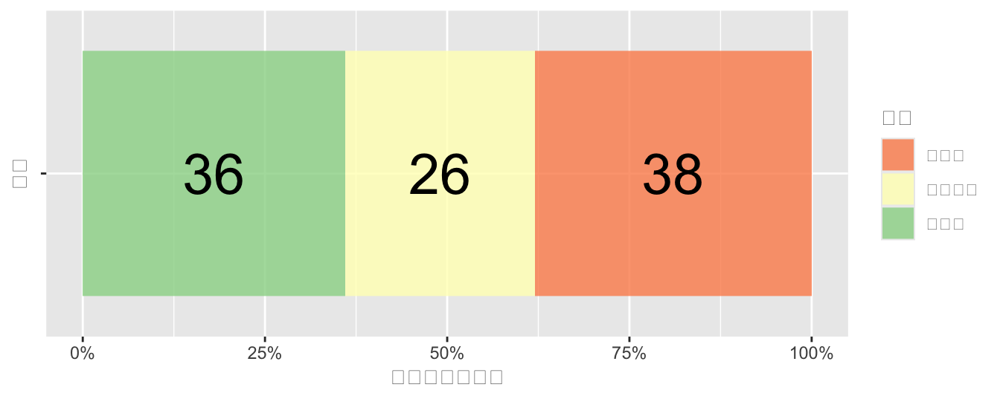

![]()
url <- "https://sdmx.oecd.org/public/rest/data/OECD.CTP.TPS,DSD_REV_COMP_GLOBAL@DF_RSGLOBAL,/..S13._T..PT_B1GQ.A?startPeriod=2014&dimensionAtObservation=AllDimensions&format=csvfilewithlabels"
df <- read.csv(url)
g7 <- c("CAN","FRA","DEU","ITA","JPN","GBR","USA")
df |>
select(country = REF_AREA,
year = TIME_PERIOD,
tax_to_gdp = OBS_VALUE) |>
mutate(year = as.integer(year),
tax_to_gdp = as.numeric(tax_to_gdp)) |>
filter(country %in% g7) |>
ggplot(aes(x = year, y = tax_to_gdp, color = country)) +
geom_line() +
scale_color_paletteer_d("awtools::mpalette")dataset <- "OECD.SDD.NAD,DSD_NAAG@DF_NAAG_I,1.0"
filter <- "A.USA+EU.B1GQ_R_POP+B1GQ_R_GR.USD_PPP_PS+PC."
dataset <- "GOV_REV"
df_oecd <- get_dataset(dataset)
df <- df |>
subset(select = c(REF_AREA, MEASURE, UNIT_MEASURE, TIME_PERIOD, ObsValue)) |>
transform(
ObsValue = as.numeric(ObsValue),
TIME_PERIOD = as.numeric(TIME_PERIOD)
)
names(df) <- tolower(names(df))
data_structure <- get_data_structure(dataset)
str(data_structure, max.level = 1)
data_structure$MEASURE$codelistⅠ. 前回の振り返り（授業の感想）
- 岩田一愛さん
- 加藤大雅さん
- 黒田凪紗さん
Ⅱ.「不安な個人、立ちすくむ国家」をめぐって」
1. リーディングアサインメント
- 田辺祉人さん
- 西田藍さん
- 美甘悠翔さん
- 吉田晴喜さん
2.「めぐって」：人生モデル・家族モデル
⑴「昭和の人生すごろく」（須賀千鶴）
- 1950年代生まれで、正社員から定年まで同じところに務める人：34%
- ➡ 典型的な人生でも何でもない
⑵ 標準世帯モデルの限界（雨宮処凛）
- 社会制度が1960年代の標準世帯モデルに準じて作られており、21世紀初頭の日本の現実に対応していない
a. 標準世帯モデル：
- 正社員の父（終身雇用が保証）
- 専業主婦
- 子ども二人
b. 非標準世帯
- 非正規社員；シングルマザー；高齢者の一人世帯
- 健康保険料が払えない（医療サービスを受けられない）
- Cf. 高齢者間の所得格差
- 貧困＝自己責任という価値観をもつエリート層（特に50代以上）の問題
〔雨宮〕ただ、バブル世代以上の人って、「日本は努力したら報われる社会なんだ」という意識がすごく強いですよね。実体験からくるんでしょうけど、貧困=自己背任という考えで凝り固まっていて、それが自分のアイデンティティとつながってしまっている感じです。だから、貧困の問題を指摘すると、まるで自分の土台が崩れるみたいな反応をすると、まるで自分の土台が崩れるみたいな反応をする人が多い。「日本には貧困なんかないんだ！貧しいのは努力が足りないんだ」と言い切っちゃう人が、特に50代から上には多いです（上野ら 2017: 16-17）。
3.「めぐって」：高学歴バイアス
高学歴バイアス（小熊英二）
- 「人生すごろく」上に「いる」のは、全人口の2割に過ぎない
- 日本社会のトータルピクチャーになっていない
- 地元から出ない人
- 地方から都市に移住し中小企業を転々とする人
- 非正規社員
〔小熊〕多くの人が、現在の社会に不満を持っている。しかしこのレポートの背景になっているのは、「労働時間が長い」「自己決定権がない」「人事異動で勝手に動かされる」「自分の思った仕事ができない」「年長者支配がひどい」「転職しにくい」「定年まで勤めても、地域に足場がなくなっている」といったものです。これは大卒で大企業、官庁に勤めている人たちの不満ですよね。母子家庭や非正規雇用の不満とは違うでしょう。 とはいえ、種類は違っても不満は不満です。どっちの不満が大きいかという話をしてもしょうがない。現代の特徴は、みんなが被害者意識を持っていて、自分たちが不幸だと感じていることだと思います（上野ら 2017: 17）
4.「めぐって」：学際性・教養の重要性
- 「学際的」「領域侵犯的」な議論の重要性（須賀千鶴）
- 専門化（分業）に伴い、「非専門家」は「非専門的」な事柄について語れない雰囲気
- 社会学の本を初めて読んだ（須賀千鶴）
- 自分たちの考えていることについて、もっとしっかりと考えている人たちがいる
〔上野〕経済政策だったら、神野直彦さんとか、金子勝さん、大沢真理さん、井出英策さん。だから、先行研究を勉強して欲しいといったんですが（上野ら 2017: 23）
5.「めぐって」：小熊モデル
日本の社会構造（小熊英二）
| 類型 | 学歴 | 給与 | 世帯所得 | 居住地 | 政治的発言力 | コミュニティ帰属 |
|---|---|---|---|---|---|---|
| 大企業型 | 高い | 高い | 高い | 都会 | 中間 | 低い |
| 地元型 | 低い | 低い | 高い | 地方 | 高い | 高い |
| 残余型 | 多様 | 低い | 低い | 都会 | 低い | 低い |

1. 大企業型＝新中間層 - 大学卒、大企業、官庁に就職する者 - 退職後、厚生年金を受給する者 - 地域コミュニティとの関係が希薄 - 専業主婦家庭の離婚問題（30代の1/3が離婚） - いつ大企業型からこぼれ落ちてもおかしくない - 日本独自 - 「既得権益」として攻撃の対象になることも
2. 地元型＝旧中間層 - 自営業者、農家ら - 国民年金の第1号被保険者 - 地元から離れない＝自治体や町内会、政治家の後援会の担い手 - 地域コミュニティの地盤沈下 - 濃厚なコミュニケーションの減少 - Cf. マイルドヤンキー論
地元に根ざし、同年代の友人や家族との仲間意識を基盤とした生活をベースとする若者。博報堂ブランドデザイン若者研究所リーダーでマーケティングアナリストの原田曜平が提唱している。現代の一般的な若者の志向とされる都市部集中、車離れ、晩婚化、少子化とは異なる経済活動や行動様式を持つと定義され、仲間と同乗して車を使い、地元企業に勤めて週末は幼なじみとショッピングモールに出かけるなど、行動エリアが半径5キロメートル以内で完結するという（『知恵蔵』）。
3. 残余型＝ルンペンプロレタリアート - 1でも2でもない人たち - 典型例：都市部の非正規雇用者 - 政治的な声を上げるルートを持っていない - 連帯できない - 共通の利害関係なし - 分断される言説 - 圧倒的に見えない階層 - 不満を沈殿させたサイレント・マジョリティ - 弱者が弱者を攻撃する - より強い弱者をめぐる争い - 政権と一体化した弱者
〔小熊〕ただ問題だと思うのは、3つのセクターから成る構造と格差があるのだけれども、それが可視化されていない。可視化されるときは、たいてい世代間対立という形か、東京都地方の格差という形にされてしまっています。〔原文改行・略〕日本の場合は、何でも世代で可視化されてしまう。それは結局、本質的な問題から目をそらす疑似対立にしかならない（上野ら 2017: 30）
- 格差問題が世代格差問題に転換されやすい
- 老害 vs 若者
- 社会的弱者は誰か、それはなぜか、という問いが生まれない
6.「めぐって」：福祉国家のレジーム
- 保守主義レジーム（後述）
- 福祉を家族と企業に依存
- 低い出生率：ケアの公共化を抑制
- 女性はパート労働（低所得；不安定な雇用）をしながら、家事も育児も負う
- ➡ 子育てできる環境なし
- 例：「保育園落ちた日本死ね」論争
7.「めぐって」：学者と政治家──行政官の立ち位置
-
社会学者：「リアリスト」
- 社会現象の実態調査；原因分析
〔小熊〕政府は人々がやりたがっていることについては、背中を押して促進させることができるけど、やりたがっていないことをやらせることはできないということです（上野ら 2017: 45）
- 政治家：「不都合な真実」は見たくない、聞きたくない
-
行政官：吏員型官僚＝政治家に言われたことしかやりたくない
- 数字を通して社会を知る
- Cf.地方公務員
- 「大企業型」バイアスをかけて社会を見ている
- 自己責任 / 社会的コストという発想
- 自分のことを頭がいいと思っている
- 数字を通して社会を知る
8.「めぐって」：衰退する地方
- 限界集落問題と村じまいの勧め
〔上野〕あの世にお見送りするまでは幸せに生きてもらわなきゃいけないじゃないですか（上野ら 2017: 43）
9.「めぐって」：日本は先進国か？
- 日本は先進国か？（鈴木敏夫）
- 先進国と発展途上国を比べる、国単位で考えること自体が意味を失っていく（小熊）
- 限界集落をどう支えるか
- 「村じまい」時代の政府の役割
10.「めぐって」：あの｢若手ペーパー｣から5年
組織としてプロジェクトからの学びはなかったのか。当時｢働き方改革｣の牽引役で、プロジェクトを陰で支えた伊藤禎則さん（現・秘書課長）は、あのペーパーを機に若手が省内で｢旗を掲げる｣活動が増えたという。大阪万博や福島の復興を考える数々のプロジェクトには地方組織も含めて誰でも参加できる。業務時間内の活動も認められ、1人が複数の名刺を持つ｢省内副業・兼業｣が浸透しつつある（浜田 2022）。
このプロジェクトの中核メンバーでもある海老原史明さん（中小企業庁事業環境部金融課総括補佐、2007年入省）は、これまで｢空飛ぶクルマ｣プロジェクトのために週1だけ霞が関で働く｢週1官僚｣を民間から募るなど、柔軟な発想でいくつもの提案をしてきた（浜田 2022）。
Ⅲ. 福祉国家論
1. 福祉国家論：定義と変遷
- 国民の福祉の積極的増進を図る国家
- 目標：社会保障政策；完全雇用政策
- Cf. ナチスの「戦争国家」；「社会主義国家」との対比で用いられる
2. 福祉国家論：福祉国家の類型
2. 福祉国家の類型
- エスピン=アンデルセン（Gøsta Hsping-Andersen）
- 政治社会学者
- 経済規定論への反発
- マルクス主義
- 近代化論
- 国家論（政策論）の復権
- 福祉国家の多様性
- 「ポスト工業化」時代
- 国家論
- 社会論

福祉国家とその要因に関して,その分析の上で単線的なアプローチから相互作用論的なアプローチへ移行する必要があり、ここでの議論もそのような問題意識に基づいていた。もし我々が福祉国家を分析しようと望むならば、我々は福祉国家の社会における役割を規定している一連の基準から始めなければならない。福祉国家の役割とは、税金を使うことではないし課税をすることでもない。また、平等をすすめることでも必ずしもない。我々は歴史的に福祉国家を形成してきたアクターがいかなる原理に基づいて団結し闘争してきたのかという点を念頭においた福祉国家比較の枠組みを提示した。福祉国家にどのような原理が埋め込まれているのかと いう点に焦点をあてると、我々は多様な福祉国家レジームのクラスターを発見することができる。そこでの相違は、何らかの共通の基準に照らしてより進んでいるか遅れているかというバリエーションではないのである。 個々のレジームの相違をつくりだしてきた歴史的諸要因は相互に連関している（エスピン=アンデルセン 2001: 35）。
| 国家レジーム | 労働力の脱商品化 | 脱階層化 | 脱家族化 | 福祉の主な供給者 |
|---|---|---|---|---|
| 自由主義型 | 低い | 高い | 中間 | 市場 |
| 保守主義型 | 中間 | 中間 | 低い | 家族 |
| 社会民主主義型 | 高い | 低い | 高い | 国家 |
| 国家レジーム | 福祉制度・福祉政策 |
|---|---|
| 自由主義型 | 政府による資力調査に基づく社会扶助；企業内福祉サービス |
| 保守主義型 | ビスマルクの社会保険制度；NGOベースの福祉サービス |
| 社会民主主義型 | 普遍的な社会保障と福祉プログラム |
1. 自由主義型
- 市場を通じた私的福祉システムを奨励
- 公的福祉は貧困の除去が中心（限定的介入）
- 選別による個別給付；給付水準は低い
2. 社会民主主義型
- 社会権に基づく公的福祉
- すべての市民を対象とする高水準での平等化を目指す
- 民間企業の比重は低い
3. 保守主義型
- 公的福祉は、家族、教会などの中間団体が供給できないサービスのみ
- 補完性原理
- 自助・共助・公助（菅義偉首相）
- 自助と共助に大きく依拠
- 現在の身分、地位の格差の維持を目的
- 民間保険の役割は小さく、社会保障支出多い
3. 福祉国家論：2つの政府論
⑴ 国民負担率：
- 48.9%（対国民所得比・2023年度）
- 33.5%（対GDP比・2023年度）
⑵ 2つの政府論
- 大きな政府
- 高福祉；高負担
- 市場への不信
- 政府の失敗
- 小さな政府
- 低福祉；高負担
- 市場への信頼
- 市場の失敗
- Cf. 新自由主義
- Cf. 日本の2025問題
- 2025年以降、団塊の世代が75歳以上の後期高齢者となり、超高齢化社会へ
4. 福祉国家論：変遷
- ヒュー・ヘクロー（Hugh Heclo）：
- 政治学（政治過程論；イシュー・ネットワーク論）
- ヘクローによる時期区分
- 試行期（1870-1920年代）
- 確立期（1930-40年代）
- 拡張期（1950-60年代）
- 再編期（1970年代以降）
flowchart TB
A([高度経済成長])
subgraph 拡張期
A([高度経済成長]) --> B([国家財政増]) --> C([社会保障支出増大])
end C([社会保障支出増大]) --> D([再編期])
- 党派を超えたコンセンサス成立
- 福祉政策をめぐる競争
- 革新と保守の境界が曖昧に
flowchart TB
A([高度経済成長の終焉])
subgraph 再編期
A([高度経済成長の終焉]) --> B([国家財政低迷]) --> C([社会保障支出困難に])
end C([社会保障支出困難に]) --> D([混迷 <br> 財源論なき社会福祉競争])
- 党派を超えたコンセンサス、困難に
- 新自由主義（自己責任論）
- 社会主義（負のラベルを背負う）
研究の焦点：
- 福祉政策の受益団体や福祉削減を阻む制度的な拒否点
1. アリーナ
- 政策が議論され、政策アイデアが交流する場
- 社会保障制度審議会；社会保険審議会；老人保健福祉審議会
2.イシュー・ネットワーク
- 特定のイシューにかかわる専門家集団（相互依存関係にある）によって、政策が変化、修正される（特定の決定因を排除）
- 社会保障政策ネットワーク
- 日本医師会；自民党族議員（厚生族）；厚生省；研究者（審議会メンバー）
- 社会保障政策ネットワーク
Ⅳ. 宿題
1.授業の感想
Notenote | 回答先と締め切り
-
回答先：Google Forms

- 締め切り：2024年1月31日23時59分まで
2. リーディングアサインメント
- 随時、受け付けています。詳しくは、第1回目の配布物を参照下さい。
Notenote | 回答先と締め切り
-
回答先：Google Forms

- 締め切り：授業日によって異なる
引用文献
イエスタエスピン-アンデルセン (2001) 『福祉資本主義の三つの世界：比較福祉国家の理論と動態』, ミネルヴァ書房.
上野千鶴子 et al. (2017) 「特集 座談会 経産省 次官・若手プロジェクト「不安な個人、立ちすくむ国家」をめぐって」. 『熱風 : スタジオジブリの好奇心』, Vol.15, No.11, pp.3–45. Available at: https://ci.nii.ac.jp/naid/40021385652/.
小熊英二 「３割の「大企業型」の働き方が日本社会を規定している：「大企業型」「地元型」「残余型」という働き方の３類型」. Available at: https://www.worksight.jp/issues/1592.html.
浜田敬子 (2022) 「あの｢若手ペーパー｣から5年。経産省に変化は起きたのか。8人の現役官僚が語る兆し」. Available at: https://www.businessinsider.jp/post-253242.
経産省若手プロジェクト (2017) 『不安な個人、立ちすくむ国家』, 文藝春秋.
Copyright
苅谷千尋